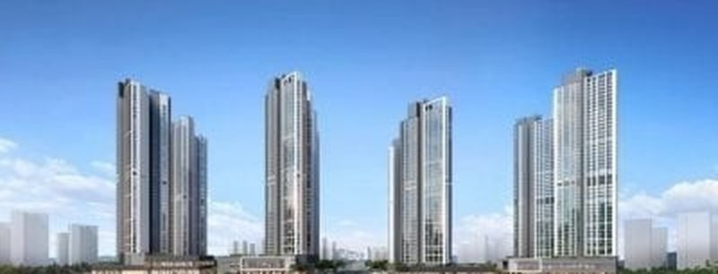
| 평가 항목 | SITE · GTX 운정중앙역 시티프라디움 (시티건설·944세대·2030년 7월 입주 예정) | 운정신도시아이파크 (HDC현대산업개발·3,042세대·2020년 7월 입주) | 파주운정신도시 디에트르 더 퍼스트 (대방건설·820세대·2021년 10월 입주) |
|---|---|---|---|
| 입지(40) | 36 | 33 | 31 |
| 브랜드(20) | 12 | 20 | 12 |
| 상품성(40) | 31 | 33 | 28 |
| 종합평점 | 79 | 86 | 71 |
| 연식가산율 | 기준(신축) | 9년5개월차·×1.075 | 8년2개월차·×1.065 |
| 84㎡ 기준가 | - | 7.15억(실거래 2026.09.27, 18층) | 6.65억(리치고 34평 실거래 2026.09, 5층) |
| 보정가격 | - | 7.15억 | 7.65억 |
SITE의 84㎡ 실제 분양가 7.52억원은 입주자모집공고(청약홈 공고번호 2026000517·2026000518)의 층별 공급금액을 84㎡ 3개 타입 510세대(3블록 84A 108·84B 86, 4블록 84 316)의 층별 세대수로 가중평균한 값이다(타입별 평균 84A 7.48억·84B 7.39억·4블록 84 7.56억, 우선공급분 포함 세대수 기준). 적정가 산출 때 쓴 84㎡ 총액 비교 기준을 그대로 유지했다. 아이파크 기준가는 2026년 9월 27일 18층 34평 7.15억원 실거래이고, 디에트르 더 퍼스트는 2026년 9월 5층 34평 6.65억원 실거래다(두 단지 모두 리치고 기준, 전용 약 84㎡). 두 단지는 GTX 운정중앙역과의 정확한 거리는 확인 안 됨이라 SITE(300m 이내)보다 교통 점수를 낮게 봤다. 적정가와 평가표는 공고 전 산출값을 그대로 쓰며 연식 보정은 입주 2029년 12월 가정 기준이다. 공고상 입주 시기(2030년 7월)로 연식 보정만 다시 하면 적정가는 약 7.43억원이 되어 예상 프리미엄이 -830만원 안팎으로 줄지만 같은 약 1~2% 고평가 구간이다.
브동산 모형이 산출한 GTX 운정중앙역 시티프라디움 84㎡ 적정가는 7.4억원이고 공고 분양가 평균은 7.52억원이다. 예상 프리미엄은 -1,160만(약 2% 고평가)으로 분양가가 적정가에 거의 맞닿아 있다. 이 구간은 단기 차익을 기대하기는 어렵지만 선분양 단지라 준공된 비교단지보다 신규 수요가 붙는 경향이 있어, GTX-A 운정중앙역 도보 생활권을 쓰려는 실수요라면 가격 부담이 크지 않은 선택이다.
경기도 파주시 동패동 일대 운정3지구 주상복합 3블록(동패동 1673번지 일원)과 4블록(동패동 400-7번지 일원)이다. 보도에 따르면 GTX-A 운정중앙역까지 약 300m 이내이고 공식 홈페이지는 도보 2분으로 소개한다. 두 블록은 GTX 운정역세권 특별계획구역 바로 옆에 나란히 놓인다.
GTX-A를 이용하면 서울역까지 약 22분이고 향후 전 구간 개통 시 삼성역 등으로 이동할 수 있다는 홍보가 있으나 전 구간 개통은 계획 사업이다. 서울~문산고속도로 등 도로망을 이용할 수 있고 제2순환로가 개통될 예정이다. 도보권에 물향기초, 운정중앙초·중, 심학고가 있고 운정중앙공원과 동패공원이 가깝다. 비교단지인 디에트르 더 퍼스트는 심학고가 0.3km로 안내되고 운정고는 경기 상위 4%(리치고 참고 지표)로 표기되나 공식 지표가 아니며 SITE의 배정 초등학교는 입주자모집공고에서도 확인하지 못했다.
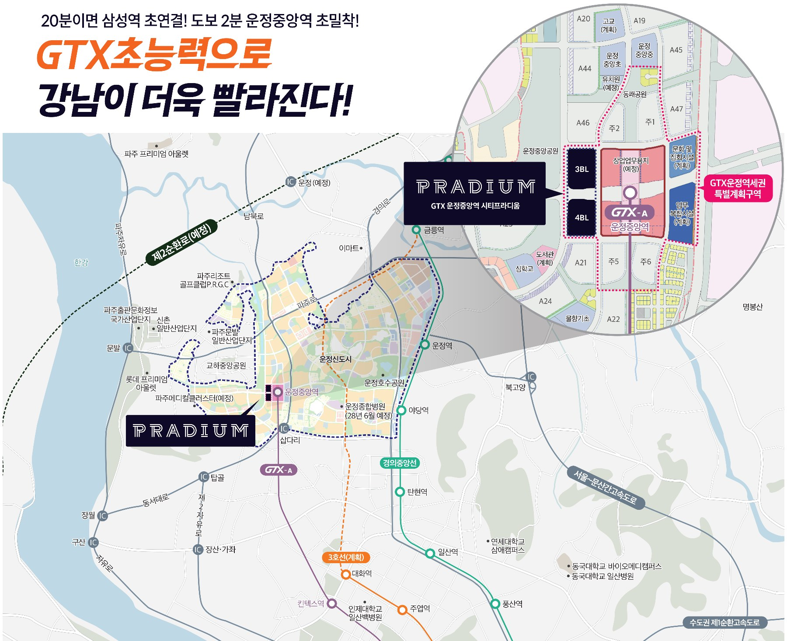
넥스트건설이 시행하고 시티건설이 시공하는 주상복합으로 3블록 지하 4층~지상 48층(472세대), 4블록 지하 4층~지상 45층(472세대), 블록당 4개 동이다. 아파트 944세대와 상업시설 171실로 구성되고 전용 60㎡·84㎡(3블록 A·B)·88㎡·115㎡ 5개 타입이다. 2026년 10월 23일 입주자모집공고(공고번호 2026000517·2026000518)를 기준으로 정리했다.
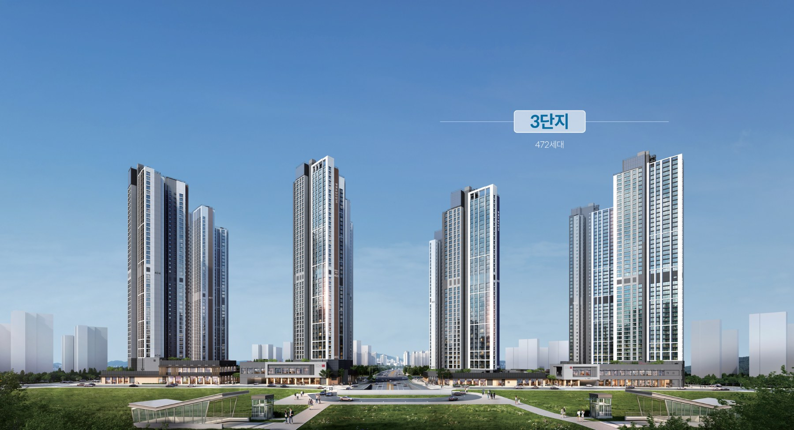
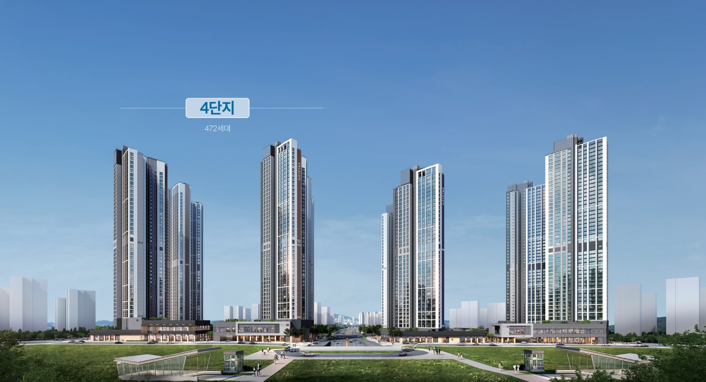
| 타입 | 세대수(청약 대상) | 분양가(층별 최저~최고) | 가중평균 |
|---|---|---|---|
| 60㎡ | 3블록 70(33) · 4블록 156(92) | 4.96억~6.01억원 | 5.56억 |
| 84A | 3블록 108(77) | 6.73억~7.98억원 | 7.48억 |
| 84B | 3블록 86(86) | 6.37억~7.94억원 | 7.39억 |
| 84(4블록) | 4블록 316(266) | 6.73억~8.14억원 | 7.56억 |
| 84㎡ 합계 | 510(429) | 6.37억~8.14억원 | 7.52억 |
| 88㎡ | 3블록 129(62) | 6.90억~8.41억원 | 7.83억 |
| 115㎡ | 3블록 79(79) | 7.99억~9.94억원 | 9.16억 |
입주자모집공고(청약홈)의 층별 공급금액 최저가~최고가이며 가중평균은 층별 세대수로 계산한 값이다(우선공급분 포함, 브동산 계산). 괄호는 우선공급을 뺀 청약 대상(특별공급+일반공급) 세대수다. 공급금액에는 발코니 확장비·추가 선택품목·취득세 등이 포함되지 않았다. 청약홈 요약 화면의 최고가 기준 금액(84A 7.98억·84B 7.94억·4블록 84 8.14억원)은 위 표의 최고가와 같다. 일부 언론·정보 사이트는 3·4블록 최저가를 한데 묶어 표기해 출처마다 범위가 다르게 보이나 이 표는 공고문 블록별 표에서 직접 확인한 값이다.
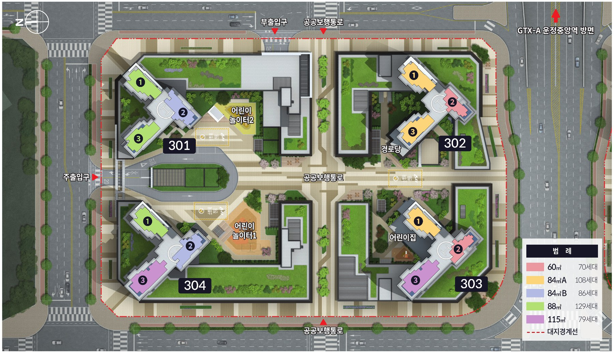
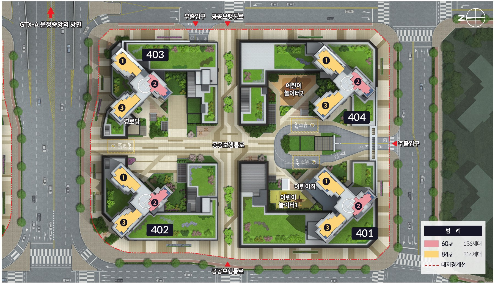
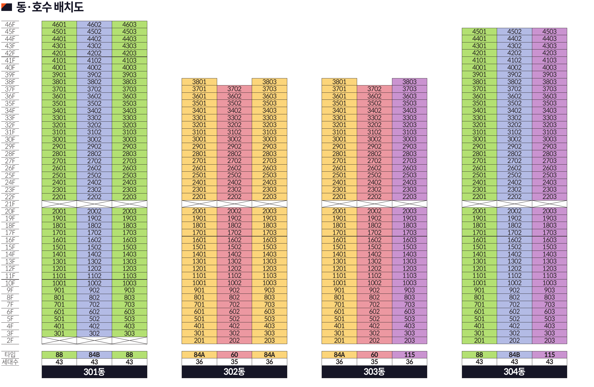
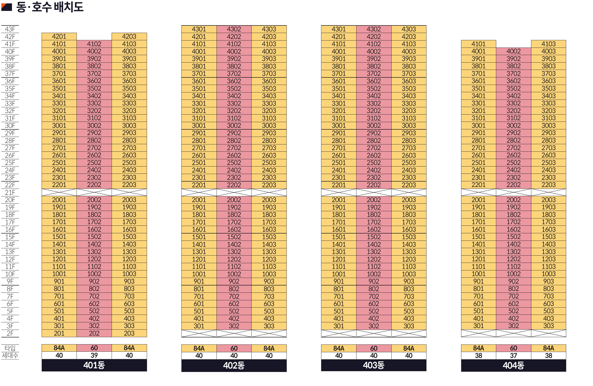
공식 홈페이지 평면 안내에는 60㎡, 84A, 84B, 88㎡, 115㎡ 5종이 모두 게시돼 있고 전부 발코니 확장형이다. 4블록의 60㎡와 84㎡는 3블록 60㎡·84A와 같은 평면 이미지를 쓴다(주거전용면적 동일, 공용면적은 블록별로 다름).
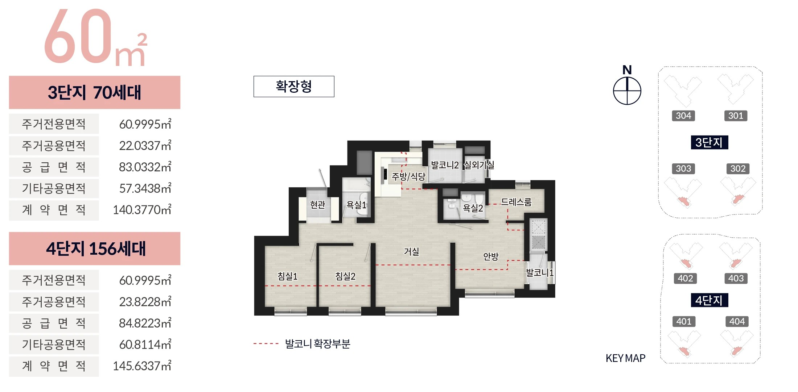
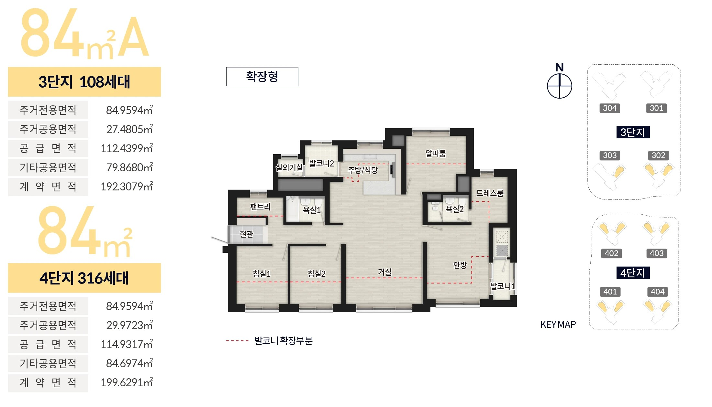
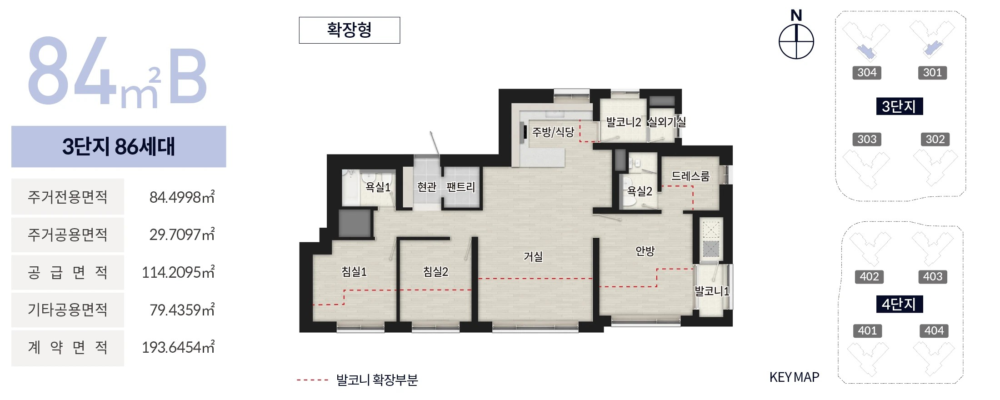
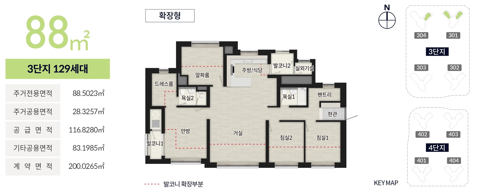
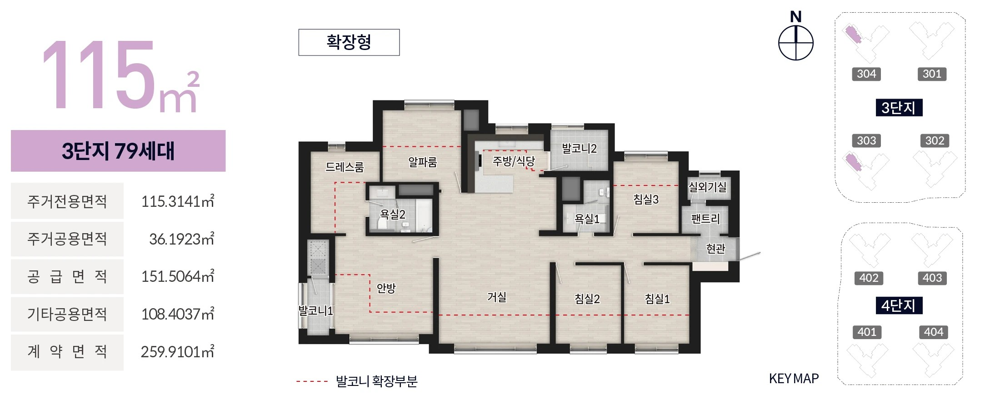
커뮤니티는 두 블록 모두 지하 1층에 골프연습장·피트니스·G.X룸·선큰·작은도서관·독서실(남·여)·입주자회의실을 둔다고 공식 홈페이지가 안내한다.
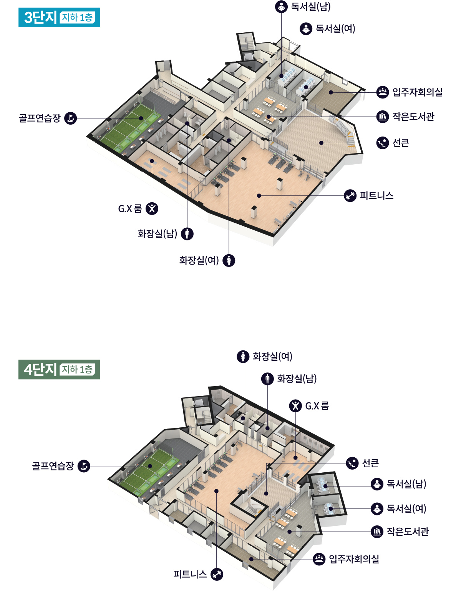
| 구분 | 3블록(공고번호 2026000517) | 4블록(공고번호 2026000518) |
|---|---|---|
| 입주자모집공고 | 2026.10.23.(금) | 2026.10.23.(금) |
| 특별공급 접수 | 2026.11.02.(월) | 2026.11.02.(월) |
| 일반공급 1순위 | 2026.11.03.(화) | 2026.11.03.(화) |
| 일반공급 2순위 | 2026.11.04.(수) | 2026.11.04.(수) |
| 당첨자 발표 | 2026.11.10.(화) | 2026.11.11.(수) |
| 서류 접수 | 2026.11.13.(금)~11.23.(월) | 2026.11.13.(금)~11.23.(월) |
| 계약 체결 | 2026.11.25.(수)~11.29.(일) | 2026.11.25.(수)~11.29.(일) |
청약홈 입주자모집공고 원문 기준이다. 청약 신청은 인터넷(청약홈)으로 하며 해당지역은 파주시 1년 이상 계속 거주자(2025.10.23. 이전부터), 기타경기는 경기도 6개월 이상 계속 거주자(2026.04.23. 이전부터), 기타지역은 경기도 6개월 미만 거주자와 서울·인천 거주자다. 3·4블록 중복 청약 가능 여부는 공고문에서 확인하지 못했다.
이 단지는 2022년 6월 민간 사전청약 당첨자 선정이 취소된 공공택지에서 후속사업주체가 공급하는 후속사업이다. 사전당첨취소자 우선공급(3블록 135세대·4블록 114세대)은 청약홈 별도 접수 없이 진행되고 부적격·미계약 물량은 규정에 따라 공급된다.
아파트 944세대 중 우선공급 249세대를 뺀 695세대가 이번 청약 대상이다. 특별공급 371세대(53%)와 일반공급 324세대(47%)로 나뉘며 상업시설 171실이 함께 공급된다.
특별공급은 3블록 141세대(기관추천 18, 다자녀 34, 신혼부부 27, 노부모부양 10, 생애최초 34, 신생아 18)와 4블록 230세대(기관추천 36, 다자녀 36, 신혼부부 52, 노부모부양 11, 생애최초 60, 신생아 35)다. 일반공급은 3블록 196세대(60㎡ 12, 84A 29, 84B 31, 88㎡ 55, 115㎡ 69), 4블록 128세대(60㎡ 33, 84㎡ 95)다. 특별공급 미청약분은 일반공급으로 넘어가 일반공급 세대수는 바뀔 수 있다. 비규제지역이라 세대원·유주택자도 청약할 수 있다.
운정3지구는 GTX-A 운정중앙역 일대 특별계획구역 개발과 맞물려 신규 공급이 이어지고 있다. 운정 아이파크 포레스트(3,250세대, 2028년 12월 입주 예정, 84㎡ 분양가 5억 후반~6억대 보도)와 LH 운정중앙역 주상복합용지 공급(2026년 10월 입찰)도 함께 거론돼 공급 경쟁이 있다.
비교단지인 운정신도시아이파크(2020년)와 디에트르 더 퍼스트(2021년)가 84㎡ 6.65억~7.15억원에 거래되는 만큼 이 단지의 84㎡ 평균 분양가 7.52억원은 신축 프리미엄을 감안해도 인근 시세보다 약간 높은 수준이다. 청약 결과(경쟁률)는 아직 나오지 않았다.
GTX 운정중앙역 시티프라디움은 GTX 역세권에 들어서는 대형 주상복합이다. 브동산 적정가는 84㎡ 기준 7.4억원이고 공고 분양가 평균은 7.52억원이라 예상 프리미엄은 -1,160만(약 2% 고평가)이다. 단기 차익을 노리기는 어렵지만 선분양 단지라 준공된 비교단지보다 신규 수요가 붙는 경향이 있고, 14층 이하 저·중층은 적정가보다 낮게 책정돼 있어 GTX-A 도보 생활권에서 실거주할 가구라면 가격 부담이 크지 않은 선택이다. 다만 3년 이상 걸리는 입주와 공급 경쟁은 감안해야 한다. 청약은 11월 2~4일이며 경쟁률은 결과가 나오면 확인해야 한다.